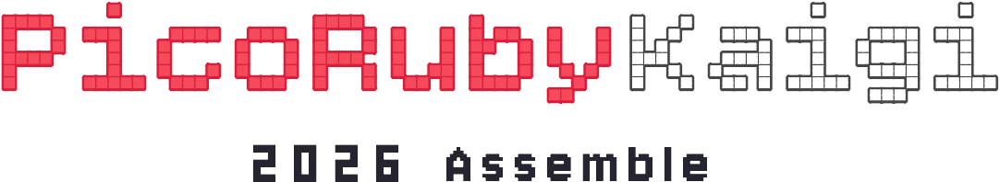

<!DOCTYPE html>
<html lang="ja">
<head>
<meta charset="UTF-8">
<title>PicoRubyKaigi 2026 Assemble 会場の案内・サイン (A4 ヨコ)</title>
<link rel="stylesheet" href="signage.css">
</head>
<body class="screen">

<script>
// 案内を 1 行ずつ足す。
//   slug … ?capture=<slug> で 1 枚だけ原寸表示するときの名前
//   jp   … プレートに刷る日本語(空文字 = 手書き用の空の枠)
//   en   … その下の英字
//   qr   … あれば文字の下に QR を置く(任意)
//   note … QR の下に添える一文(任意)
const SIGNS = [
  { slug: 'blank',      jp: '',             en: '' },
  { slug: 'reception',  jp: '受付',          en: 'RECEPTION' },
  { slug: 'speaker',    jp: 'スピーカー受付', en: 'SPEAKER CHECK-IN' },
  { slug: 'exhibition', jp: '持ち込み展示',   en: 'EXHIBITION' },
  { slug: 'books',      jp: '書籍立ち読み',   en: 'BOOKS' },
  { slug: 'board',      jp: 'Adventure Board<br>受渡し', en: 'ADVENTURE BOARD PICKUP' },
  { slug: 'keynote',    jp: '基調講演者席',   en: 'KEYNOTE SPEAKERS' },
  { slug: 'staff',      jp: 'スタッフ席',     en: 'STAFF' },
  // QR 付きの案内。qr があると文字の下に QR を置く
  { slug: 'hashtag',    jp: '#picorubykaigi', en: '',
    qr: 'images/qr-hashtag.svg', note: 'QR から、このタグ付きでポストできます' },
];

// 足もとは署名なので全枚同じ。左 3 個 / ワードマーク / 右 3 個。
// 名札の案内(../nametag/index.html)も同じ並び
const FOOTER = ['batt','speaker','7seg', 'motor','chip','ruby'];

// 部品の画像とクラス(クラスが見た目の大きさを決める。signage.css の .p-* )
const PARTS = {
  motor:       ['../../images/motor.png',        'p-motor'],
  speaker:     ['../../images/spaeker.png',      'p-speaker'],
  '7seg':      ['../../images/7seg-1.png',       'p-7seg'],
  chip:        ['../../images/chip.png',         'p-chip'],
  batt:        ['../../images/battery.png',      'p-batt'],
  ruby:        ['../../images/ruby-mini.png',    'p-ruby'],
  pico:        ['../../images/pico.png',         'p-pico'],
  board_green: ['../../images/board_green_t.png','p-board'],
  board_red:   ['../../images/board_red_t.png',  'p-board'],
};

const part = key => {
  const [src, cls] = PARTS[key];
  return ``;
};

// プレートに収まる字の大きさを決める。
// DotGothic16 は全角 1em / 半角 0.55em(実測)。プレートの内寸は 260mm だが、
// 左右に余裕を見て 230mm に収まる大きさにする。上限 33mm
const jpSize = jp => {
  const lines = jp.split('<br>');
  const len = Math.max(...lines.map(l =>
    [...l].reduce((n, ch) => n + (/[\x20-\x7e]/.test(ch) ? 0.55 : 1), 0)));
  return Math.min(33, 230 / len).toFixed(1);
};

const sheet = s => `
  <div class="paper">
    <div class="sheet">
      <div class="plate"><i></i>${s.jp ? `<div class="jp" style="font-size:${jpSize(s.jp)}mm">${s.jp}</div>` : ''}${s.en ? `<div class="en">${s.en}</div>` : ''}${s.qr ? `<div class="qr"></div>` : ''}${s.note ? `<div class="note">${s.note}</div>` : ''}</div>
      <div class="bar">
        <div class="side l">${FOOTER.slice(0, 3).map(part).join('')}</div>
        <div class="word"></div>
        <div class="side r">${FOOTER.slice(3).map(part).join('')}</div>
      </div>
    </div>
  </div>`;

const capture = new URLSearchParams(location.search).get('capture');
const list = capture ? SIGNS.filter(s => s.slug === capture) : SIGNS;
document.body.insertAdjacentHTML('beforeend', list.map(s =>
  `<div class="caption">${s.slug}${s.jp ? ` — ${s.jp}` : ' — 手書き用(空)'}</div><div class="scaler">${sheet(s)}</div>`
).join(''));

// 画面表示だけ、窓幅に合わせて縮小する(印刷と ?capture は等倍のまま)
function fit() {
  if (capture) { document.body.style.padding = '0'; document.body.style.gap = '0'; return; }
  // 一覧は縦に並ぶので高さは見ず、幅だけで決める(1 枚表示の ?capture は等倍)
  const s = Math.min(1, (window.innerWidth - 40) / (297 * 96 / 25.4));
  document.documentElement.style.setProperty('--s', s);
}
addEventListener('resize', fit);
fit();

// ?capture=<slug> のときはラベルを消す
if (capture) document.querySelectorAll('.caption').forEach(el => el.remove());
</script>

</body>
</html>
